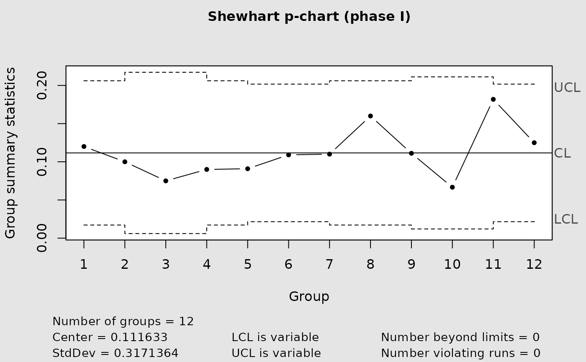
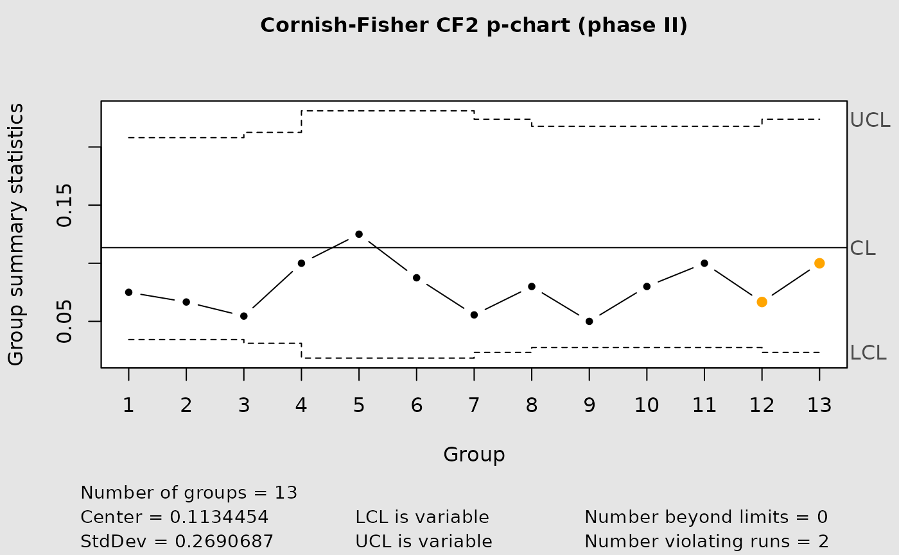
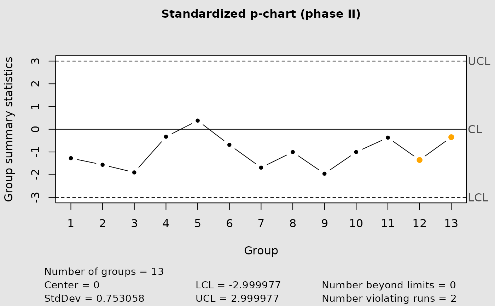

Build normal, Cornish-Fisher corrected, or standardized p charts.
cchart.p(
x1 = NULL,
n1 = NULL,
type = "norm",
p1 = NULL,
x2 = NULL,
n2 = NULL,
phat = NULL,
p2 = NULL,
alpha = ALPHA
)Phase I nonconforming counts.
Phase I sample size or vector of sample sizes.
Chart type. Accepted values are "normal", "cf1", "cf2", and "standardized". The legacy aliases "norm", "CF", and "std" remain supported; "CF" maps to "cf1".
Phase I subgroup proportions. Used instead of x1.
Phase II nonconforming counts.
Phase II sample size or vector of sample sizes.
Known or previously estimated in-control proportion.
Phase II subgroup proportions. Used instead of x2.
Nominal two-sided false alarm probability. Defaults to 0.0027.
Invisibly returns the qcc object used to draw the chart.
For a Phase I chart, n1 and exactly one of x1 or p1 must be supplied. For a Phase II chart, n2 and exactly one of x2 or p2 must be supplied, together with Phase I information or a known phat.
When sample sizes vary, the process proportion is estimated by the pooled binomial estimator, \(sum(x_i) / sum(n_i)\), rather than by the unweighted mean of subgroup proportions. The plotting wrapper uses two-sided limits; use pchart_limits() directly for one-sided upper limits.
Montgomery, D. C. (2008). Introduction to Statistical Quality Control. Wiley.
Joekes, S. and Barbosa, E. P. (2013). An improved attribute control chart for monitoring non-conforming proportion in high quality processes. Control Engineering Practice, 21, 407–412. doi:10.1016/j.conengprac.2012.12.005 .
data(binomdata)
cchart.p(x1 = binomdata$Di[1:12], n1 = binomdata$ni[1:12])

cchart.p(x1 = binomdata$Di[1:12], n1 = binomdata$ni[1:12],
type = "cf2", x2 = binomdata$Di[13:25],
n2 = binomdata$ni[13:25])

cchart.p(type = "standardized", p2 = binomdata$Di[13:25] /
binomdata$ni[13:25], n2 = binomdata$ni[13:25],
phat = 0.1115833)
